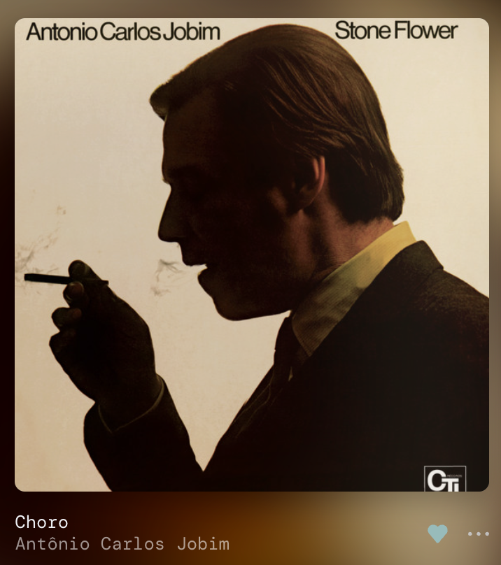
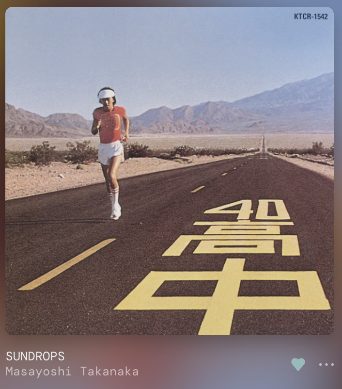
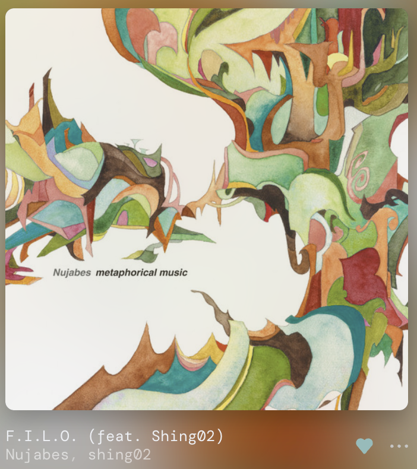
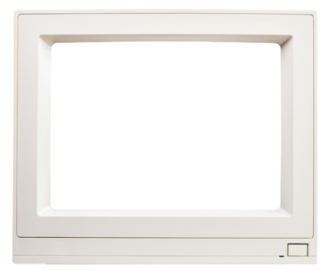

Hi! Welcome to my lil' corner of the internet. Sit and stay awhile, if you please!
| Track | Runtime | Thoughts |
| Choro | 2:08 | I'm a fan of bossa nova and the like, so I've enjoyed a lot of Jobim's works. Stone Flower is an album that captures a deep blend of flitting curiosity and sentimental warmth. |
| SUNDROPS | 5:10 | I found Takanaka's work through a long autumn afternoon spent building a cabinet (more on that sometime later). His music is of an unusually bright joy, lighter than sunshine. Not sure how that ties back to cabinet-making, but I'll find something. |
| F.I.L.O. | 3:31 | Nujabes does a good job of falling into the captivating force of boom bap without being too overbearing (lookin' at you, pop rappers) — I like the cold guitar in the background. Also, obligatory queues reference. |
A few of my favorite experiences (dated by release) ...
- Kirby Air Ride (2003)
- Ace Attorney: Trials and Tribulations (2004)
- MOTHER 3 (2006)
- Team Fortress 2 (2007)
- 'The Three-Body Problem' (2008)
- Asleep 2 (2017)
- Eastward (2021)

ENGIE'S WRENCH
Level 3 Wrench
"Outta mah way! Outta mah way!"
Some things I've made (not real sites)
- A messy collage of a website with info on cryptography ("Kryptos")
- A sleek webstore purporting to sell HTML elements ("The Hypertext Warehouse")
- A very... fair gambling game ("Gambler's Delight")
- A shameless ripoff of Mario 64's title screen ("Average Programmer 64")
..and many more unfinished projects that will never see the light of day!
